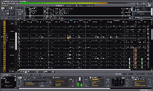

renoise
Dieser Artikel wurde für die folgenden Ubuntu-Versionen getestet:
Ubuntu 16.04 Xenial Xerus
Zum Verständnis dieses Artikels sind folgende Seiten hilfreich:
Renoise  ist ein umfangreiches, als Tracker konzipiertes Programm zum Komponieren und Produzieren von Musik. Das Programm ist keine Freeware, jedoch ist die Linux-Demo nur in wenigen Funktionen eingeschränkt und läuft zeitlich unbegrenzt. Eine jack-Schnittstelle ist vorhanden und es können DSSI-, LADSPA und native VST-Plugins eingebunden werden .
ist ein umfangreiches, als Tracker konzipiertes Programm zum Komponieren und Produzieren von Musik. Das Programm ist keine Freeware, jedoch ist die Linux-Demo nur in wenigen Funktionen eingeschränkt und läuft zeitlich unbegrenzt. Eine jack-Schnittstelle ist vorhanden und es können DSSI-, LADSPA und native VST-Plugins eingebunden werden .

Renoise kann Samples (z. B. im MP3- oder Wave-Format) sowie per Midi oder Tastatur eingespielte Instrumente auf ein Zeitraster („Pattern Sequencer“) mit mehreren Spuren legen und mit Effekten versehen. Typisch für einen Tracker ist hierbei, dass alle Befehle, wie z. B. Lautstärke, Tonhöhe und Effekte im Hexadezimalsystem angezeigt werden und über die Tastatur editierbar sind, so dass kein Midi-Keyboard benötigt wird.
In dem Programm lassen sich weiterhin die Spuren untereinander abmischen, Samples bearbeiten und die Midi-Belegung ändern. Parameter können automatisiert werden und seit Version 2.6 können auch Skripte zum Erweitern des Funktionsumfangs eingebunden werden. Projekte werden in dem freien XRNS-Format gespeichert.
Installation¶
Unter www.renoise.com  kann man sich die aktuelle Version herunterladen. Die Datei muss in einen Ordner innerhalb des Homeverzeichnisses entpackt [1] werden. Das Programm kann nun bereits durch Ausführen der Datei renoise ausprobiert werden. Um das Programm zu installieren, kann man dann die Datei install.sh mit Root-Rechten [2] im Terminal [3] ausführen:
kann man sich die aktuelle Version herunterladen. Die Datei muss in einen Ordner innerhalb des Homeverzeichnisses entpackt [1] werden. Das Programm kann nun bereits durch Ausführen der Datei renoise ausprobiert werden. Um das Programm zu installieren, kann man dann die Datei install.sh mit Root-Rechten [2] im Terminal [3] ausführen:
sudo ./install.sh
Analog funktioniert die Deinstallation durch Ausführen der Datei uninstall.sh.
Unter Umständen kann es nötig sein, einen Echtzeitkernel[4] zu installieren, um eine ausreichend geringe Latenz zu erreichen.
Benutzung¶
Renoise ist ein sehr komplexes und mächtiges Programm, auf dessen Einzelheiten hier nicht eingegangen werden kann. Als guter Einstieg empfiehlt es sich, die Quickstart.pdf zu studieren und bei Bedarf die Tutorials auf der Renoise-Homepage durchzuarbeiten. Auch sollte man sich gegebenenfalls die beiliegenden Demo-Songs anschauen und sich mit dem Hexadezimalsystem befassen.
Da Renoise unter Linux über JACK läuft, kann es mit anderen Programmen verbunden und kombiniert werden. Auch ist es auf diese Art möglich, mithilfe von Aufnahmeprogrammen wie Audacity oder Ardour die in der Demoversion gesperrte Exportfunktion in guter Qualität zu umgeben. Bei längerer und intensiver Benutzung sollte man sich jedoch überlegen, durch Kauf der Vollversion die Entwickler und das Projekt finanziell zu unterstützen und weitere Funktionen freizuschalten. Mit dem Kauf erhält man neben dem Programm auch eine Fülle an Samples.
Neue Instrumente und Samples lassen sich direkt im Programm über den Reiter "Disk Browser" in das Programm einbinden und müssen auf einen Instrumentenslot in der oberen rechten Ecke des Programms gelegt werden. Die unter Linux voreingestellte Tastenbelegung kann man im User Manual einsehen.
Erweiterungen¶
Über Erweiterungen, die Renoise Tools , kann der Funktionsumfang von Renoise erweitert werden. Neben vielen guten Bedienungshilfen gibts es unter anderem auch bessere Unterstützung für bestimmte Hardware und die Möglichkeit, Renoise für Livesessions zu benutzen.
Links¶
Wiki
- offizielle Anleitungen und TutorialsAudio Plugin Systems For Linux
- Zusammenstellung von DSSI, VST, LADSPA sowie anderer Plugins für Linux
- Erstellt mit Inyoka
-
 2004 – 2017 ubuntuusers.de • Einige Rechte vorbehalten
2004 – 2017 ubuntuusers.de • Einige Rechte vorbehalten
Lizenz • Kontakt • Datenschutz • Impressum • Serverstatus -
Serverhousing gespendet von